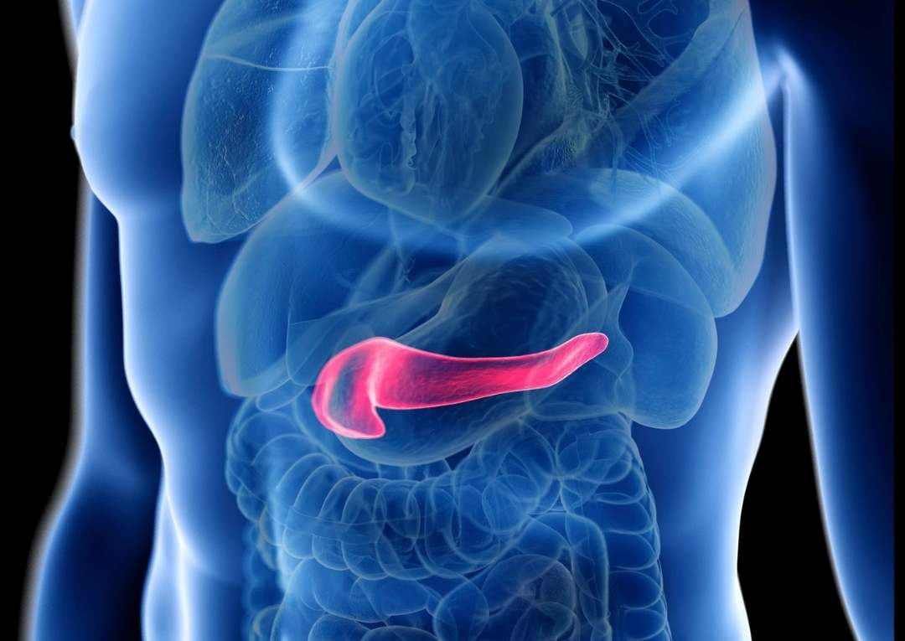

La fabricación de un páncreas artificial o de tejido pancreático es un campo de investigación activo en medicina regenerativa. Una técnica prometedora es la bioingeniería de tejidos, que implica el cultivo de células pancreáticas en un andamio tridimensional. Se utilizan células madre o células progenitoras pancreáticas para crear tejido funcional. También se investiga la impresión en 3D de tejidos pancreáticos utilizando bio-tintas y bioimpresoras. Otra técnica es la reprogramación celular, donde células de otra parte del cuerpo se convierten en células pancreáticas. Aunque aún se encuentra en desarrollo, estas técnicas tienen el potencial de crear tejido pancreático funcional para la regeneración y el tratamiento de enfermedades como la diabetes. |
 |